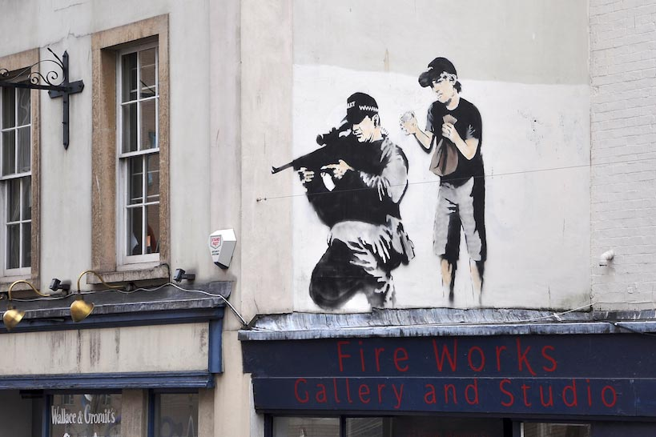

Credit
This graffiti piece by Banksy of a police sniper crouching on top of a building with a boy standing behind him about to give him a loud surprise courtesy of a paper bag was visible in Bristol for several years and could be seen opposite the Bristol Royal Infirmary (BRI) and Bristol Children’s Hospital buildings but in 2012 it was defaced.
2010-09
Spray Paint
Bristol, UK